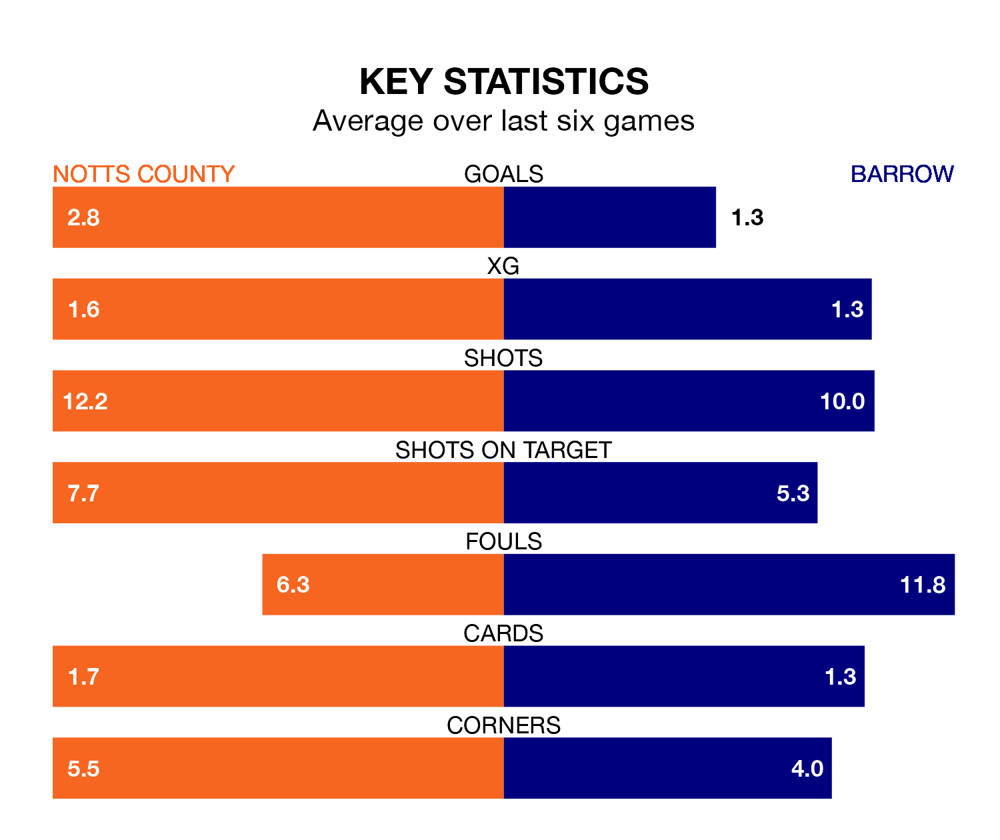

Notts County face a challenge to maintain their high-scoring form at home against a tight Barrow defence on Saturday.
With 60 goals in 27 games, County are the top scorers in EFL League Two ahead of the 3pm kick-off at Meadow Lane.
They face a Bluebirds side who have scored 41 in 28 matches, but conceded only 29 goals, putting them third among the league's tightest defences – only Stockport County and Mansfield Town have conceded fewer goals.
In Macaulay Langstaff, County have the league's sharpest shooter so far this season. He has notched 20 goals in 27 appearances.
His goal rate of one every 117 minutes is slightly quicker than that of Ben Whitfield, Barrow's top scorer with a goal every 117 minutes, and a total of seven goals in 18 games.
The Bluebirds are fifth in the table after 28 games, of which they have won 13 and drawn 10, earning 49 points.
The home team are two places behind the visitors in seventh, with 13 wins and four draws putting them on 43 points.
County are in mixed form in EFL League Two, with two wins and a draw from their last six games.
With a win and three draws over that period, Barrow's form is slightly worse – they have taken six points from 18, compared to County's seven.
County's last match was on January 13, a 5-5 draw against Grimsby Town, with Aaron Evans Nemane (two), David McGoldrick (two) and Langstaff getting the goals for County.
Barrow lost 3-1 against Crewe Alexandra last time out, on January 20, with Robbie Gotts on the scoresheet.
Saturday's match will be refereed by Alex Chilowicz, who has taken charge of three EFL League Two games so far this season, issuing no red cards and booking nine players. He has not awarded any penalties.
He is yet to oversee a match featuring either County or Barrow this season.
Updated: 08:51 (UTC), 25/01/24